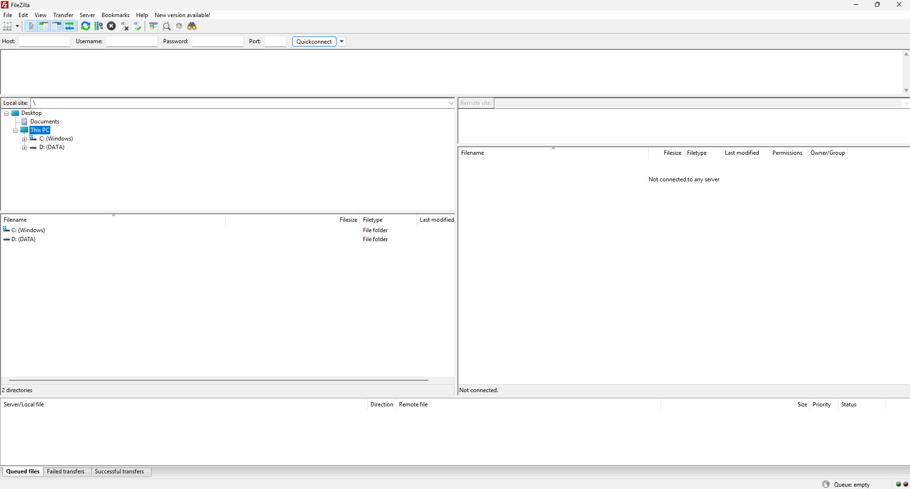
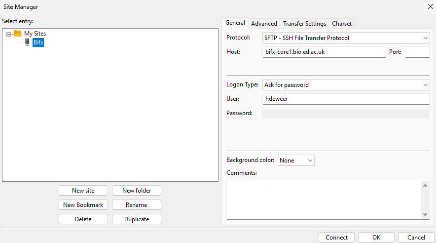
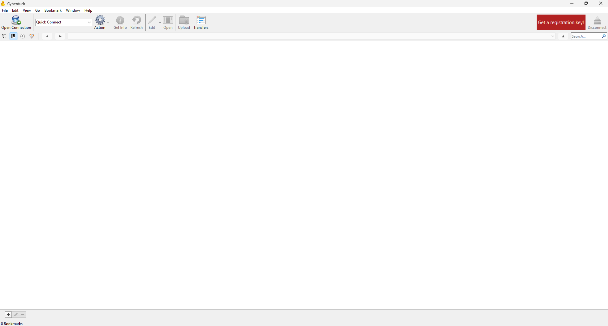
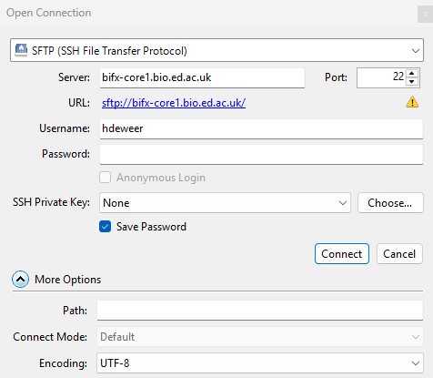

Transferring Files
Remove servers are extremely useful in doing processing of large amounts of data. However in many cases, files will need to be transfer to or from these servers. There are several tools that are useful and easy to use. How to connect to a remote server using FileZilla and Cyberduck are explained below. FileZilla is available for all operating systems, Cyberduck is available for Windows and MacOS. The instructions for both will assume that the tool have been installed and you are connecting from within the university from a location on site or through a VPN connection. At the end, there will be a section on Rsync, which can be used to copy files and folders from a Linux machine or between servers.
FileZilla
FileZilla is a generally used tool for transferring files. When opening FileZilla, the screen should look like Figure 1.

To open a connection to a server, go to File at the top and click Site Manager. Create a new site. To connect to the server, there are several settings that need to be changed.
- The protocol should be set to SFTP - SSH File Transfer Protocol
- The host must contain the link to the server. As an example
bifx-core1.bio.ed.ac.ukcan be used. - Set the logon to Ask for password
- Set the user to your username, for the servers within the University this will often be your UUN unless otherwise specified. If you are unsure, ask an administrator of the server.
This connection should now be saved for future used. Click Connect to establish the connection. The first time you connect, you might need to accept the server as being trusted. Lastly, your password will be asked. The settings are shown in Figure 2.

At the top of the screen, information on the status of the connection will be shared. Once the connection has been established, the folder on the server should show on the right side of the screen. To transfer data between the two systems, right click any files (the files on your computer on the left, server on the right) and download them. A good thing to be aware of is that files will be uploaded into the folder that is currently selected on the other system. At the bottom of the screen, files are shown that are currently being processed. Once all the files are processed, the data should be where they are wanted.
Cyberduck
Cyberduck works very similar to FileZilla, when opening up it should look like Figure 3.

Several settings need to be configured to make the connection work.
- The protocol should be set to SFTP (SSH File Transfer Protocol)
- The server must contain the link to the host. As an example
bifx-core1.bio.ed.ac.ukcan be used. - Set the username to your username, for the servers within the University this will often be your UUN unless otherwise specified. If you are unsure, ask an administrator of the server.
Once this is set, press connect. The first time you connect, you might need to accept the server as being trusted. An overview of the settings is shown in Figure 4

When the connection is established, an overview of the files on the server are shown. You can go to the folder and files that need to be downloaded. Right click the folder or file of interest. Our suggestion would be to click Download to, you will then be able to download the file to the folder you want to save the data to. To upload a file, make sure you are in the folder you want to upload the data to. Once you are in the folder, click the Upload button at the top of Cyberduck and select the folder or file to be uploaded. Click choose and the file should then be uploaded. To check the status of downloads and uploads, click the Transfer button at the top of the file.
Rsync
There are a number of different ways to copy files from one Linux machine to another. To copy a file or folder from a Linux machine to a server, the following command can be used.
$ rsync -cav UPLOAD USER@HOST:/remote/destination/In this command several things need to adjusted for the upload to work.
- UPLOAD need to be replaced with the file or folder that needs to be uploaded.
- USER needs to be replaced with the username on the server. Within the University this is generally your UUN.
- HOST needs to be replaced with the link to the server (for example
bifx-core1.bio.ed.ac.uk) - /remote/destination is the place in the system that the file or folder needs to be placed inside of.
To download data, the command is basically the same, the first file or folder given is the remote file followed by the location where the file should be saved.